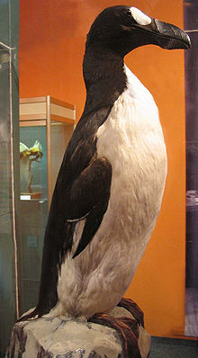
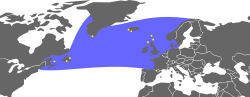

| Great Auk | |
|---|---|
|  | |
| Specimen in the Staatliches Museum für Tierkunde Dresden | |
| Conservation status | |
| Binomial name | |
| Pinguinus impennis (Linnaeus, 1758) |
|
|  | |
| Approximate range (in blue) with known breeding sites indicated by yellow marks[1][2] | |
| Synonyms | |
|
The Great Auk, Pinguinus impennis, formerly of the genus Alca, was a large, flightless alcid that became extinct in the mid-19th century. It was the only modern species in the genus Pinguinus, a group of birds that formerly included one other species of flightless giant auk from the Atlantic Ocean region. It bred on rocky, isolated islands with easy access to both the ocean and a plentiful food supply, a rarity in nature that provided only a few breeding sites for the auks. When not breeding, the auks spent their time foraging in the waters of the North Atlantic, ranging as far south as New England and northern Spain through Canada, Greenland, Iceland, Faroe Islands, Norway, Ireland, and Great Britain.
The Great Auk was 75 to 85 centimetres (30 to 33 in) tall and weighed around 5 kilograms (11 lb), making it the largest member of the alcid family. It had a black back and a white belly. The black beak was heavy and hooked with grooves etched into its surface. During the breeding season, the Great Auk had a white patch over each eye. After the breeding season, the auk lost this patch, instead developing a white band stretching between the eyes. The wings were 15 centimetres (5.9 in) long, rendering the bird flightless. Instead, the auk was a powerful swimmer, a trait that it used in hunting. Its favorite prey were fish, including Atlantic Menhaden and Capelin, and crustaceans. Although agile in the water, it was clumsy on land. Its main predators were Orcas, White-tailed Eagles, Polar Bears, and humans. Great Auk pairs mated for life. They nested in extremely dense and social colonies, laying one egg on bare rock. The egg was white with variable brown streaking. Both parents incubated for about six weeks before their young hatched. The young auks left the nest site after two or three weeks and the parents continued to care for them.
Humans had hunted the Great Auk for more than 100,000 years. It was an important part of many Native American cultures which coexisted with the bird, both as a food source and as a symbolic item. Many Maritime Archaic people were buried with Great Auk bones, and one was buried with a cloak made of over 200 auk skins. Early European explorers to the Americas used the auk as a convenient food source or as fishing bait, reducing its numbers. The bird's down was in high demand in Europe, a factor which largely eliminated the European populations by the mid-16th century. Scientists soon began to realize that the Great Auk was disappearing and it became the beneficiary of many early environmental laws, but this proved not to be enough. Its growing rarity increased interest from European museums and private collectors in obtaining skins and eggs of the bird. This trend eliminated the last of the Great Auks on 3 July 1844 on Eldey, Iceland. However, a record of a bird in 1852 is considered by some to be the last sighting of this species. The Great Auk is mentioned in a number of novels and the scientific journal of the American Ornithologists' Union is named The Auk in honor of this bird.
{kind=link}
{kind=link}